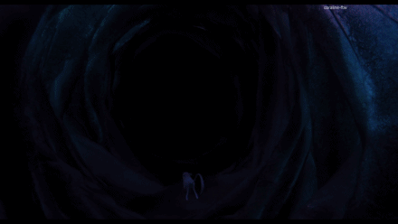
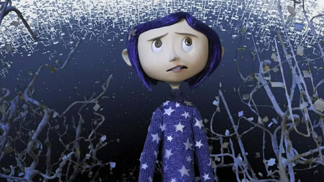

Hið háleita
Hið háleita í Coraline birtist aðallega í hinum heiminum (e. the other world). Allt í hinum heiminum er búið til af hinni mömmunni — meira að segja hún sjálf er gervi. Hún gerir allt sem hún veit að Coraline hefur ekki í sínum heimi. Hún ásamt hinum pabbanum veitir henni mikla athygli og gefur henni gott að borða sem hljómar kannski ekki svo illa, en þetta gerir hún til að reyna að fá hana til þess að treysta sér.
 Hinn heimurinn virðist kannski fallegri til að byrja með en það er samt eitthvað óútskýranlega óþægilegt við hann. Það er eiginlega allt óeðlilega fullkomið þar. Hinn heimurinn á sér engan enda. Þegar Coraline reynir að labba út fyrir garðinn er eins og heimurinn hverfi og byggist svo aftur upp í kringum hana; þá er hún aftur komin á byrjunarreit.